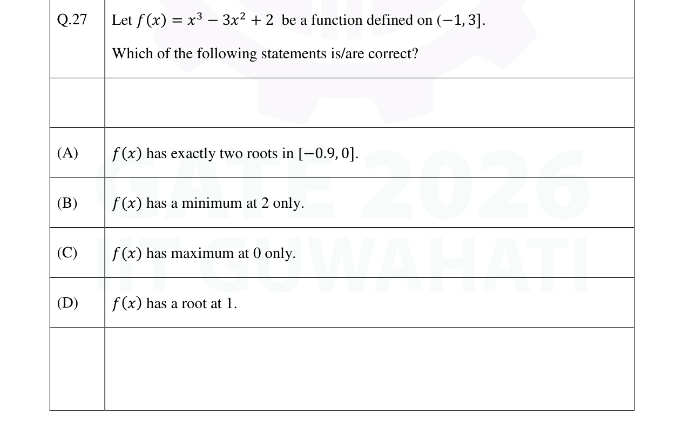
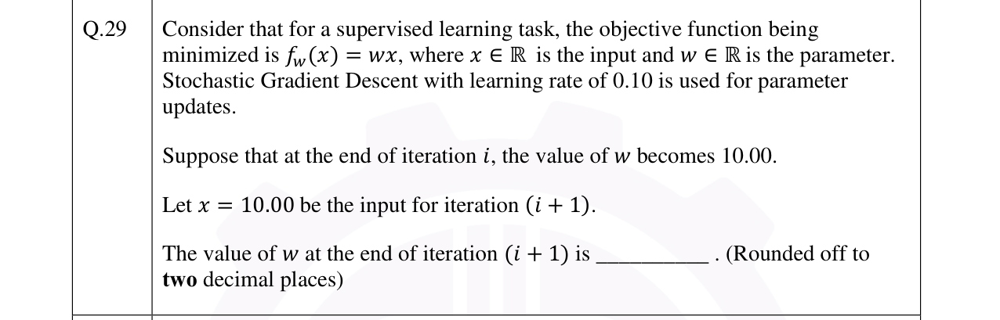

Real GATE DA 2024, 2025 & 2026 questions from the Optimization part of our syllabus, tagged by year. Attempt each (MCQ, MSQ or numerical) and check the official answer.
GATE DA 2026Univariate optimizationMSQ1 mark

Multiple correct (MSQ) — select all that apply.
GATE DA 2026Gradient descentNAT1 mark

Numerical answer (NAT) — type a value and press Check.
Numerical answer (NAT) — type a value and press Check.
$\sqrt{t^2+t}-t=\dfrac{t}{\sqrt{t^2+t}+t}\to\tfrac12$ as $t\to\infty$.
GATE DA 2025Univariate optimizationMSQ2 marks
Q49. Consider $f(x)=\dfrac{x^3}{3}+\dfrac72x^2+10x+\dfrac{133}{2}$ on $[-8,0]$. Which is/are correct?
Multiple correct (MSQ) — select all that apply.
$f'(x)=x^2+7x+10=(x+2)(x+5)$: $x=-5$ is a local max, $x=-2$ a local min. On $[-8,0]$ the maximum is at the endpoint $x=0$ where $f=\tfrac{133}{2}$ (C). $f'$ is an upward parabola minimized at its vertex $x=-\tfrac72$ (D). A and B are false.
GATE DA 2025ConvexityMSQ2 marks
Q51. Let $f:\mathbb{R}\to\mathbb{R}$ be twice-differentiable with $f''(x)>0$ for all $x$. Which is/are ALWAYS correct?
Multiple correct (MSQ) — select all that apply.
$f$ is strictly convex, so $f'$ is strictly increasing (at most one zero $\Rightarrow$ B) and there is at most one minimum (C, D). But a strictly convex function need not have a minimum (e.g. $e^x$), so A is not always true.
GATE DA 2024Univariate optimizationMCQ1 mark
Q15. For any twice-differentiable $f:\mathbb{R}\to\mathbb{R}$, if at some $x_0$ we have $f'(x_0)=0$ and $f''(x_0)>0$, then $f$ necessarily has a ______ at $x=x_0$.
Single correct (MCQ).
Stationary point with upward curvature $\Rightarrow$ a local minimum (the second-derivative test gives only local information).
GATE DA 2024Continuity & differentiabilityMCQ2 marks
Q37. Let $f:\mathbb{R}\to\mathbb{R}$ be $f(x)=\begin{cases}-x,& x<-2\\[2pt] ax^2+bx+c,& x\in[-2,2]\\[2pt] x,& x>2\end{cases}$ Which choice of $a,b,c$ makes $f$ continuous and differentiable?
Single correct (MCQ).
Match value and slope at $x=\pm2$: at $x=2$, $4a+2b+c=2$ and $4a+b=1$; at $x=-2$, $4a-2b+c=2$ and $4a-b=1$. Solving gives $a=\tfrac14,\ b=0,\ c=1$.
GATE DA 2024Univariate optimizationMSQ2 marks
Q50. Consider $f(x)=\dfrac{x^4}{4}-\dfrac{2x^3}{3}-\dfrac{3x^2}{2}+1$. Which of the following is/are TRUE?
Multiple correct (MSQ) — select all that apply.
$f'(x)=x^3-2x^2-3x=x(x-3)(x+1)$, so critical points are $-1,0,3$. $f''(x)=3x^2-4x-3$: $f''(0)=-3<0$ (max), $f''(3)=12>0$ (min), $f''(-1)=4>0$ (min). So A, B true; C, D false.